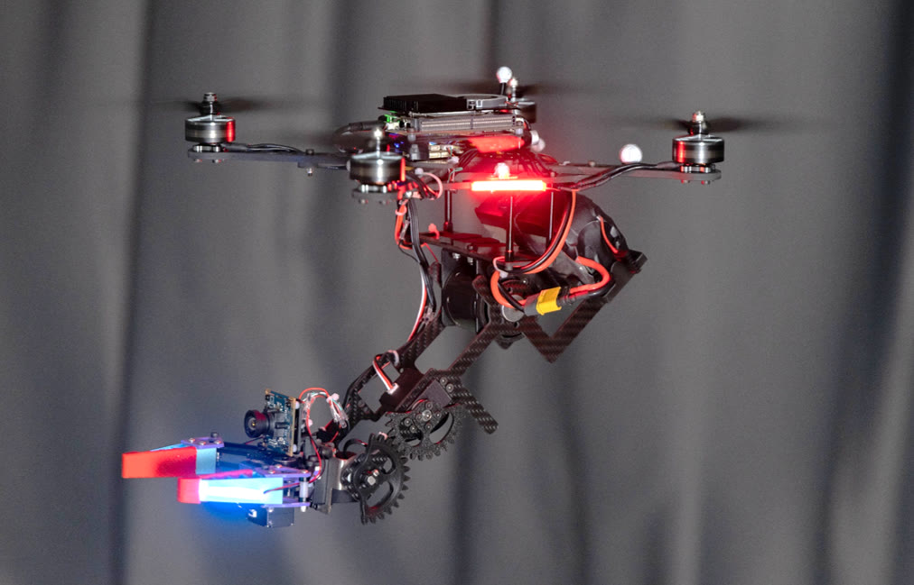

ICRA 2027Submitted
Trains whole-body VLA policies on synthesized trajectories without physical demonstrations, then chains local skills into scene-scale missions with a relational scene graph.
I'm Ruiyang LIU, an M.Sc. student in Computer Control and Automation at Nanyang Technological University, advised by Prof. Lihua XIE.
Before NTU, I spent three years as a navigation algorithm engineer at KEENON Robotics, building navigation systems for commercial service robots. I received my B.Eng. in Robotic Engineering from Northeastern University, China. My research focuses on aerial manipulation, whole-body motion planning, and multi-UAV navigation. Feel free to reach out!
Pick a topic to highlight related work.
A compact quadrotor with a 3-DoF arm and gripper that plans the drone and the arm together. Link-wise signed distance fields keep fine geometry for close-range contact, and a whole-body trajectory optimizer produces safe, executable motions.

Trains whole-body VLA policies on synthesized trajectories without physical demonstrations, then chains local skills into scene-scale missions with a relational scene graph.
A recurrent teacher–student policy that jointly commands flight, arm motion, and gripper closure for whole-body aerial grasping and lifting.
Compact quadrotor aerial manipulator with link-wise MRC-SDF collision queries and whole-body trajectory optimization.
Two ducted fans along the interaction axis deliver strong horizontal force for pushing and pulling, without large attitude changes.
Aligns sketch-map priors such as floor plans with onboard observations to coordinate indoor UAV swarms, including under communication loss.
* Equal contribution
Our team won the national championship, ranking 1st among 52 finalist teams. The car received dispatch commands and completed loading, transport, and unloading while handling traffic lights, S-shaped roads, speed bumps, and obstacles, integrating SLAM, path planning, lane and traffic-light perception, and task scheduling.
Counted with GoatCounter · updates every few hours